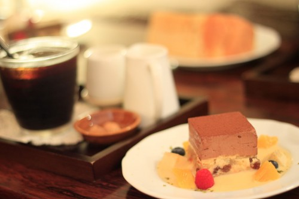

| ランチプレート | ぱんランチ | 600円 |
|---|
| ごはんランチ | 700円 |
| ドリンク | オーガニックコーヒー | 350円 |
|---|
| 紅茶 | 300円 |
| ハーブティー | 300円 |
| ミックスジュース | 400円 |
| ケーキ | チョコブラウニー | 400円 |
|---|
| チーズケーキ | 400円 |
| シフォンケーキ | 250円 |
ランチプレートは週替わりです。カフェのメニューを見てください。
季節のドリンクやケーキをご用意しているときもあります。お見逃しなく！

使用している素材について
「MuccoCafeとは」でも紹介しているように、MuccoCafeでは素材にこだわっています。
その一部を紹介します。
- お米
- 京都府南丹市の農家さんから年間契約している無農薬玄米を、必要な分だけその都度７分づきに精米しています。
- 小麦粉
- カナダ産のオーガニック小麦を使用しています。パンは全粒粉３割。酵母は自家製。酵母の素にはいろんなものを試しています。
- ミルク
- ほとんどの料理では国産有機豆乳を使用していますが、牛乳を使用する場合は木次乳業のパスチャライズ牛乳を使っています。
- たまご
- 奈良県月ヶ瀬にある農場の平飼い卵を使っています。パッケージに「平飼い」と書かれていても、適切な環境で平飼いしている農場は国内にはほとんどありません。とても貴重な卵です。
Copyright (c) MucoCafe All Rights Reserved.